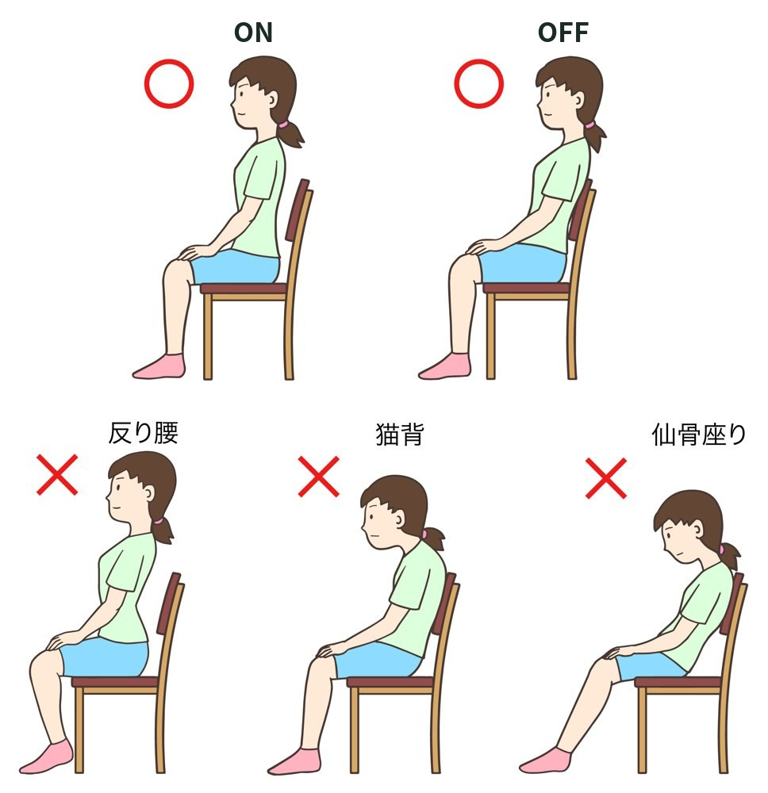
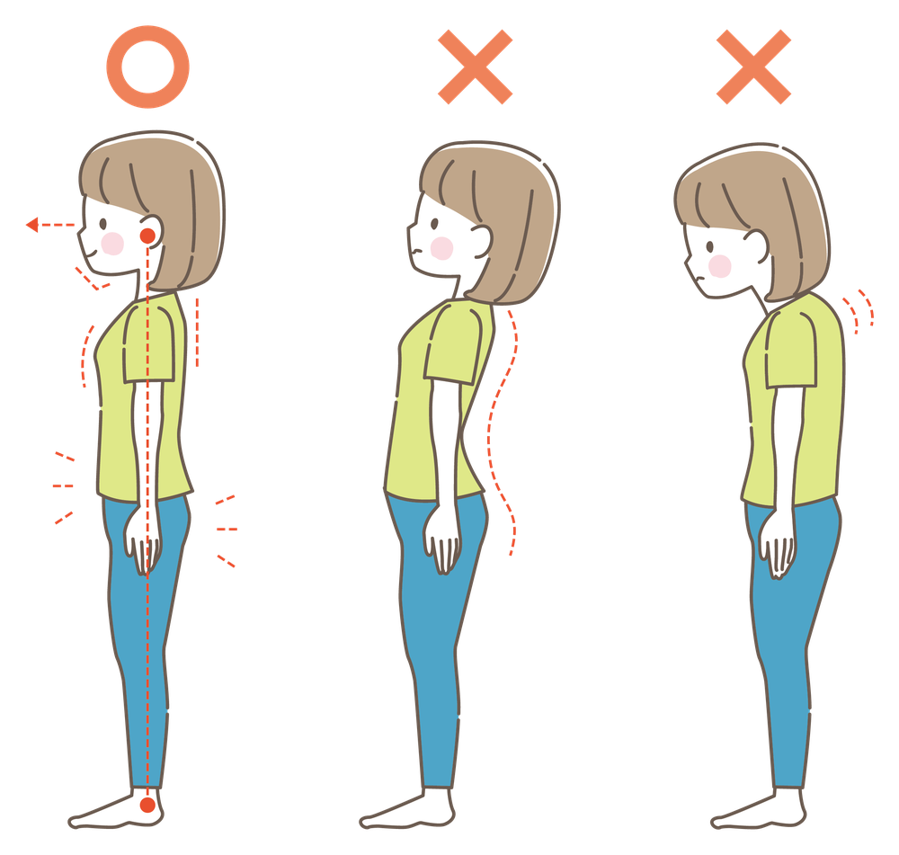

カラダの使い方
こたつ・ソファの姿勢が腰にひびく話

- こたつ・ソファでは、骨盤が後ろに倒れて腰が丸まりやすい
- 座り方は「ON」と「OFF」で考えましょう
- 胸は、腹筋を使うことで自然に開きます
寒い季節は、こたつやソファでくつろぐ時間が長くなります。「こたつから立ち上がろうとしたら、腰が伸びない」「ソファでテレビを見たあと、腰が重い」という方も多いのではないでしょうか。
くつろいでいる姿勢は楽に感じますが、長く続くと、腰にひびいてきます。
こたつ・ソファで腰がつらくなる理由
- 骨盤が後ろに倒れ、背中が丸くなる
こたつで床に座ると、骨盤が後ろに倒れて、背中が丸くなります。やわらかいソファに浅く座り、ずり落ちたような姿勢も同じです。腰の一部に負担が集まります。 - カラダをねじったまま過ごす
テレビの方を向いてカラダをひねる、片ひじをついて横になる、いつも同じ側に足をくずす。かたよった姿勢が続くと、カラダの歪み（ユガミ）のもとになります。 - 同じ姿勢のまま、長く動かない
こたつは暖かく、つい何時間も座りっぱなしになります。動かない時間が長いほど、腰はかたくなります。
特に、こたつで床に座る姿勢は、椅子に比べて骨盤を起こしにくく、腰が丸まりやすい座り方です。
座り方は「ON」と「OFF」で考える
良い姿勢を、ずっと続けられる人はいません。大切なのは、良い姿勢の時間を少しずつ長くしていくことです。当院では、座り方を「ON」と「OFF」の2つで考えるよう、お伝えしています。
- オン：骨盤を起こす
骨盤を起こして、おしりの骨（座骨）に少し体重をのせます。自然に背すじが起きます。下腹を軽く引きこみ、その力をみぞおちのあたりまで上げるイメージで保つと、胸が自然に開きます。 - オフ：もたれて休む
腰が疲れてきたら、力を抜いて背もたれにもたれます。浅く座るとずり落ちた姿勢になるので、少し深めに座りましょう。背中の筋肉を休ませる、大切な時間です。
注意
オンのときに無理に胸を張ろうとすると、腰が反って、かえって腰を痛めることがあります。胸は、腹筋を使うことで自然に開くものと考えてください。

こたつ・ソファでのひと工夫
- こたつでは座椅子やクッションで背もたれを作る
- 足を組む、いつも同じ側に足をくずす。そのくせに気づいたら、その場で直す
- 30分〜1時間に一度は立ち上がり、腰を伸ばす
- こたつから立つときは、テーブルに手をついて、ゆっくり立ち上がる
- こたつで寝てしまわないようにする
- 寝る前に、あお向けで5〜10分。カラダのかたよりをリセットします
座り方・立ち方・歩き方は、正しいカラダの使い方のページで、くわしくご紹介しています。
こんなときは早めにご相談ください
- 立ち上がるときに毎回腰が伸ばしにくい
- 腰の痛みが、何週間も続いている
- おしりや足にシビレがある
足のシビレが強い、力が入らないときは、先に医療機関を受診してください。長引く腰痛は、カラダ全体のバランスから見直すことが大切です。当院では、骨ぴか整体（骨格矯正）で骨盤や背骨のバランスを整え、カラダの使い方も一緒にお伝えしています。
- くつろぐ姿勢も、長く続くと腰にひびきます
- 「ON」と「OFF」をくり返し、ONの時間を少しずつ長く
- 30分〜1時間に一度は立ち上がって、腰を伸ばしましょう